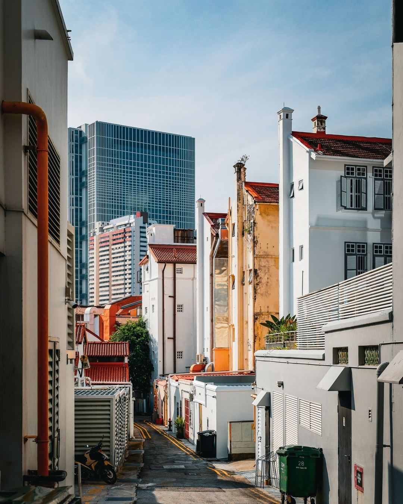
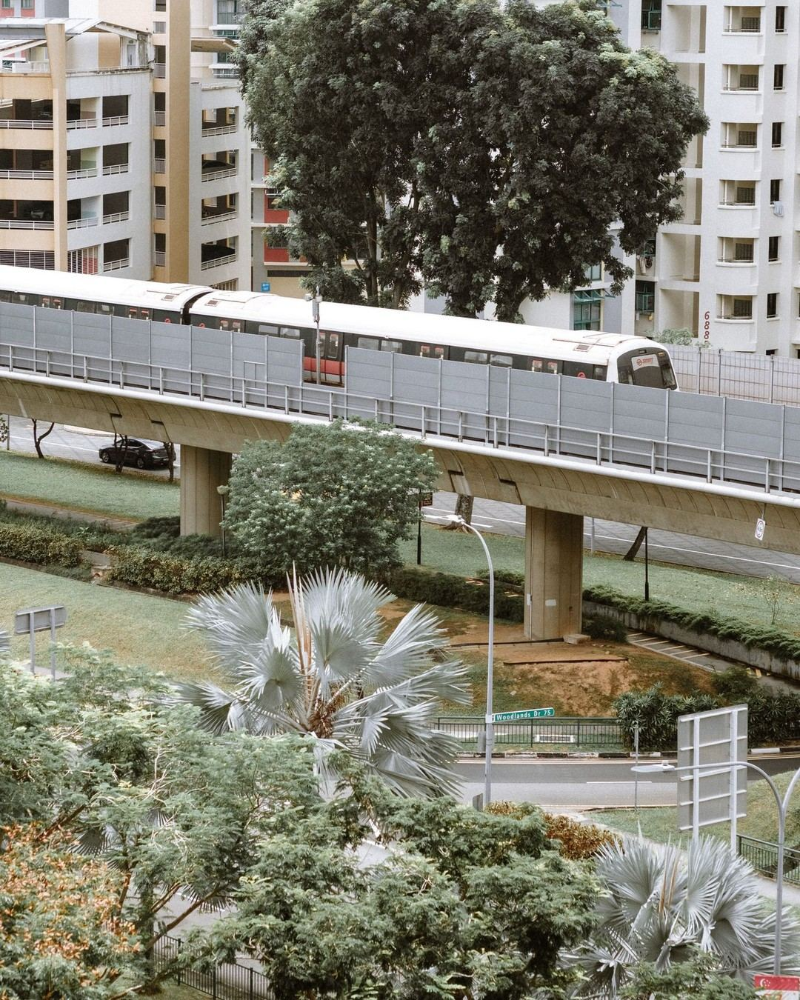
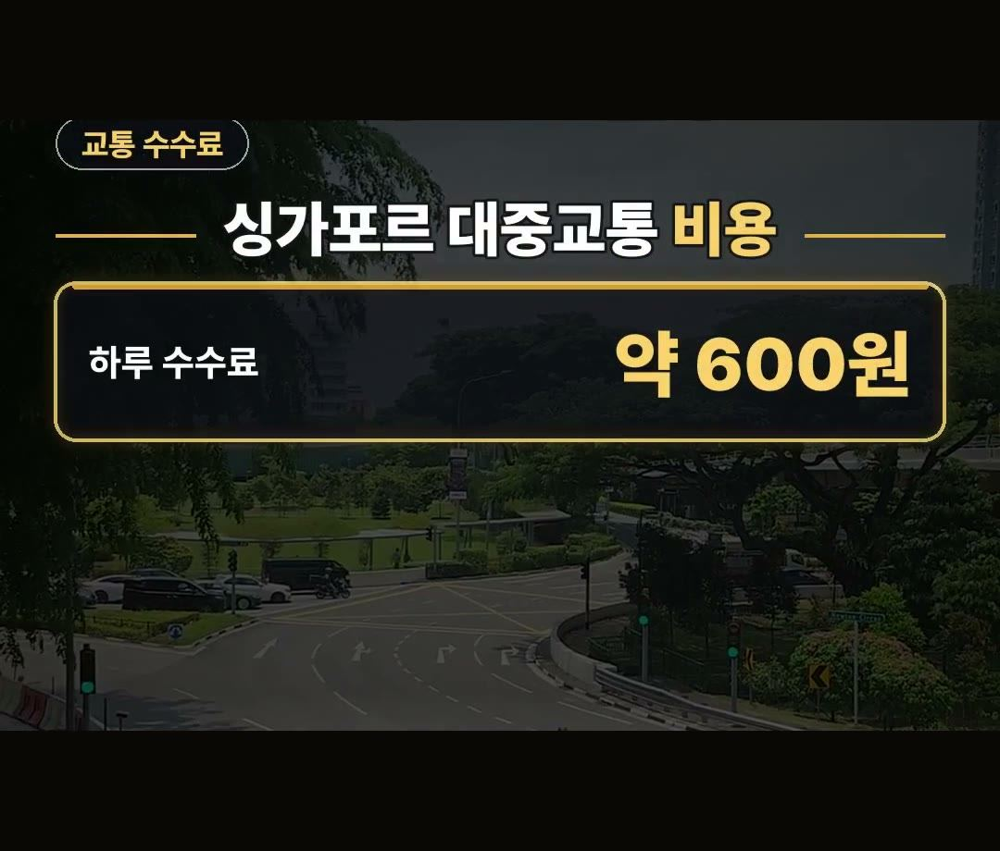
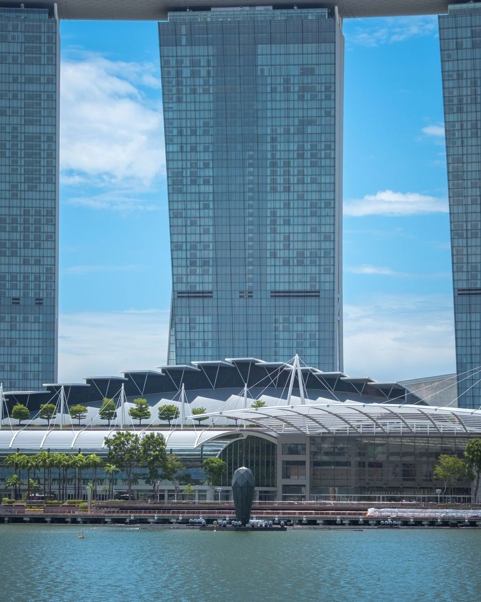
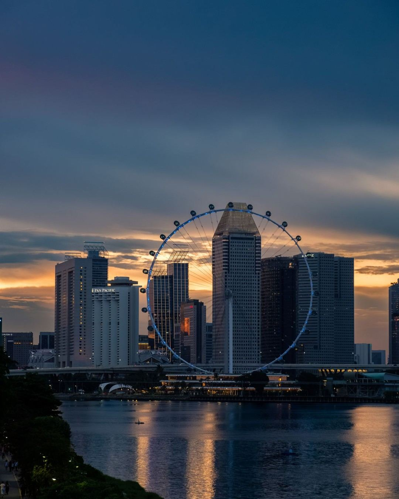
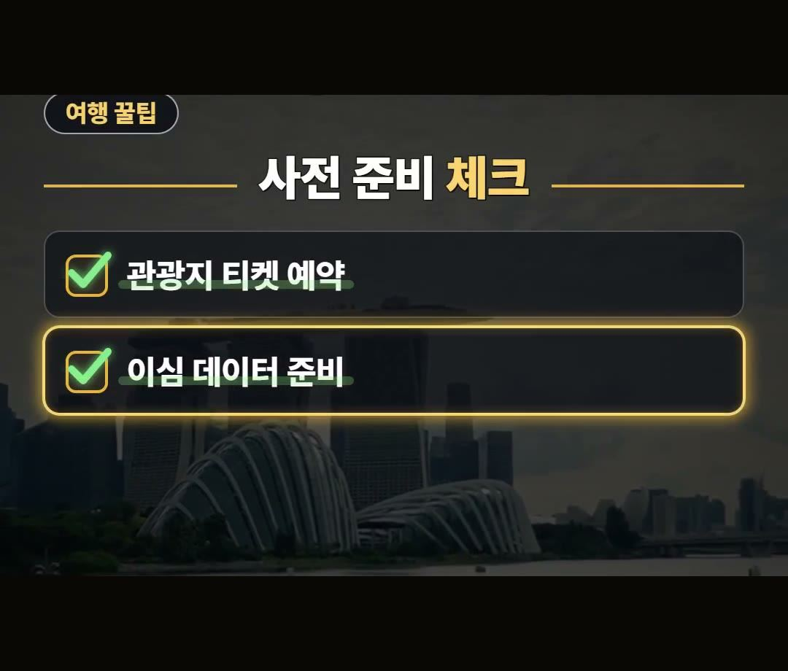

싱가포르 여행 준비물, 전자담배·껌은 빼고 챙겨야 하는 이유
※ 이 글에는 제휴 링크가 포함되어 있으며, 링크를 통해 예약·구매하시면 일정 수수료를 받을 수 있습니다. (가격은 같습니다)
※ 이 포스팅은 쿠팡 파트너스 활동의 일환으로, 이에 따른 일정액의 수수료를 제공받습니다.
싱가포르로 출발을 앞두고 무언가 놓친 준비물이 없는지 마음이 쓰이시나요?
2026년 10월 기준 싱가포르 여행 전에 체크해 두면 좋은 입국 신고, 교통 수수료, 어댑터, 반입 금지 물품 관련 내용을 안내해 드립니다.

싱가포르 여행 준비물을 2026년 10월 기준으로 정리해 봤어요. 전자 입국 신고서는 도착일을 포함해 3일 전부터 낼 수 있고, 터치 결제 카드로 지하철·버스를 타면 요금과 별도로 쓴 날마다 수수료 약 600원이 붙는 점을 미리 알아 두면 좋습니다. 😉
전자 입국 신고서 무료 작성법
싱가포르 전자 입국 신고서(SGAC)는 도착일을 포함해 3일 전부터 낼 수 있습니다. (예: 30일 도착이면 28일부터)
공식 사이트와 공식 앱은 무료이니 돈을 받는 대행 사이트는 피하고, 출발 전에 미리 준비해 두는 것이 좋습니다.


싱가포르 여행 준비물 체크리스트: 대중교통 이용과 수수료
싱가포르에서는 교통카드를 따로 사지 않아도 터치 결제가 되는 한국 비자나 마스터 카드로 지하철과 버스를 탈 수 있습니다.
다만 카드의 해외 결제가 켜져 있어야 하고, 요금과 별도로 수수료가 붙으니 아래 내용을 알아 두세요.

- 쓴 날마다 붙는 수수료: 약 600원 (요금과 별도)
싱가포르 여행 준비물 리스트: 삼구 어댑터 준비
싱가포르는 220~240볼트에 삼구 플러그를 사용하므로 어댑터가 필요합니다.
한국 플러그 모양과 달라서 어댑터를 미리 챙기는 것이 좋습니다.

전자담배 및 껌 반입 금지 주의 사항
싱가포르는 전자담배를 갖고만 있어도 벌금 대상이므로 주의해야 합니다.
또한 껌도 반입이 금지되어 있으니 짐을 쌀 때 미리 빼두는 것이 안전합니다.

싱가포르 여행 준비물 꿀팁: 사전 준비 체크
주요 관광지 입장권은 온라인으로 예약하면 대기 시간을 줄일 수 있습니다.
또한 해외 데이터 사용을 위해 이심을 미리 준비하는 것이 도움이 됩니다.

- 관광지 입장권 온라인 예약
- 이심 데이터 사전 준비
정리
1. 전자 입국 신고서는 도착일을 포함해 3일 전부터 공식 사이트·공식 앱에서 무료로 낼 수 있습니다.
2. 터치 결제가 되는 한국 비자나 마스터 카드로 지하철과 버스를 탈 수 있고, 요금과 별도로 쓴 날마다 수수료 약 600원이 붙습니다.
3. 삼구 어댑터와 이심을 준비하고 전자담배와 껌은 짐에서 제외합니다.
최저가 예약 링크는 아래에 모아 두었어요.
지금 쓸 수 있는 여행사 할인
- 📶 해외 데이터는 이심으로 미리 준비하세요 (마이리얼트립 마이심)
※ 여행사 사정으로 조건이 바뀌거나 일찍 끝날 수 있어요. 예약 전에 여행사 화면에서 한 번 더 확인하세요. (2026-10-05 확인)
📌 2026년 10월 기준 정보예요. 가격은 환율·시기에 따라 달라질 수 있어요.
· 싱가포르 이민검문청(ICA) 입국 신고서 무료·대행 사이트 주의 안내
· 싱가포르 대중교통 SimplyGo 터치 결제 카드 수수료
사진·영상영상 화면: Pexels (CK Seng, Nirjhar Basak, Ray ., Shruthi Pradeep, Timo Volz, Tue Simon)
사진: Pexels (Ken Chuang, Richa W-Fryatt, Richard L, Arian Fernandez)